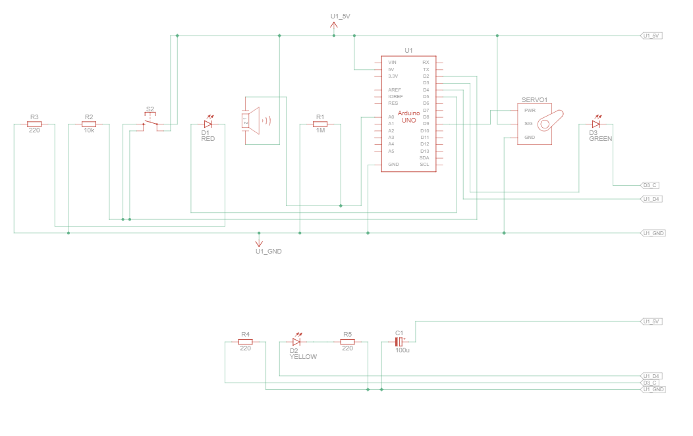
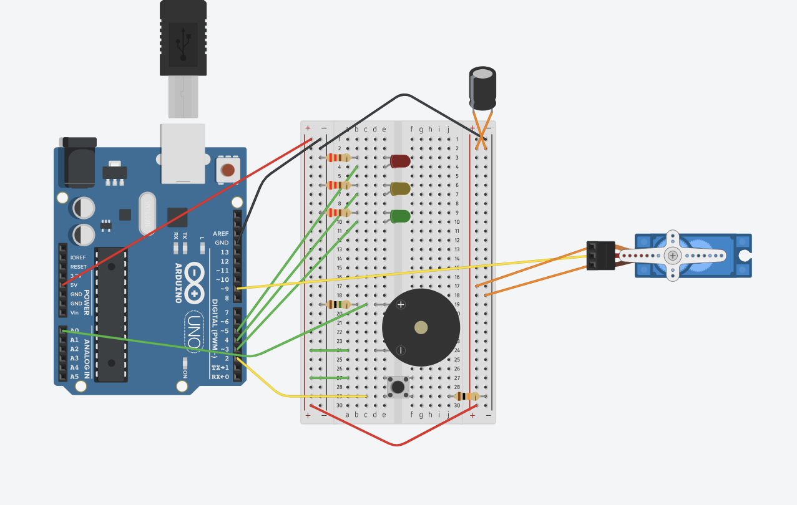
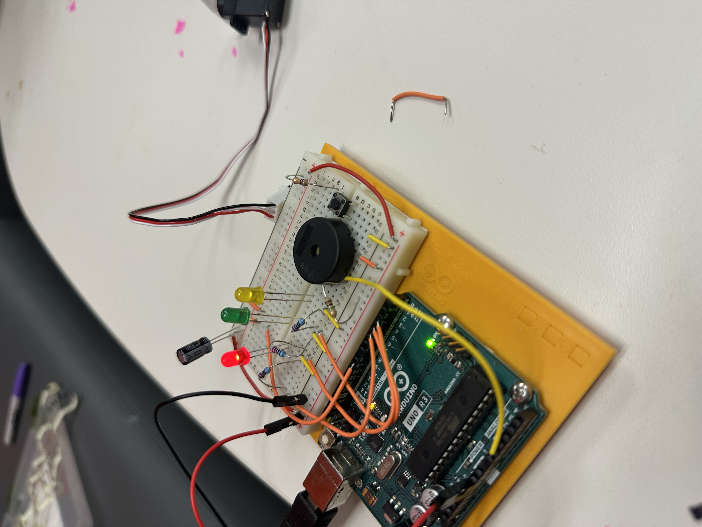

Arduino HW 12 - Knock Lock
IGME 470
HW 12, the "Knock Lock" utilizes the piezo sensor as an input, rather than an output. Piezos are capable of sensing vibrations in addition to making sound. This assignment uses the piezo to detect knocks, locking and unlocking based on a sequence of knocks.
This was a great lesson in using the Piezo, a component with multiple use cases. Sensing vibrations can have a variety of applications, from security systems to interactive installations. The challenge of accurately detecting knocks and filtering out noise made this project particularly engaging.



The parts used:
- 1x Arduino Uno R3
- 1x Piezo
- 1x Red LED
- 1x Yellow LED
- 1x Green LED
- 1x Pushbutton
- 1x 1 MΩ Resistor
- 1x 10 kΩ Resistor
- 3x 220 Ω Resistors
- 1x 100 uF Capacitor
- 1x Servo Motor
Click to view full Arduino code
// import the library
#include <Servo.h>
// create an instance of the Servo library
Servo myServo;
const int piezo = A0; // pin the piezo is attached to
const int switchPin = 2; // pin the switch is attached to
const int yellowLed = 3; // pin the yellow LED is attached to
const int greenLed = 4; // pin the green LED is attached to
const int redLed = 5; // pin the red LED is attached to
// variable for the piezo value
int knockVal;
// variable for the switch value
int switchVal;
// variables for the high and low limits of the knock value
const int quietKnock = 10;
const int loudKnock = 100;
// variable to indicate if locked or not
bool locked = false;
// how many valid knocks you've received
int numberOfKnocks = 0;
void setup() {
// attach the servo to pin 9
myServo.attach(9);
// make the LED pins outputs
pinMode(yellowLed, OUTPUT);
pinMode(redLed, OUTPUT);
pinMode(greenLed, OUTPUT);
// set the switch pin as an input
pinMode(switchPin, INPUT);
// start serial communication for debugging
Serial.begin(9600);
// turn the green LED on
digitalWrite(greenLed, HIGH);
// move the servo to the unlocked position
myServo.write(0);
// print status to the Serial Monitor
Serial.println("the box is unlocked!");
}
void loop() {
// if the box is unlocked
if (locked == false) {
// read the value of the switch pin
switchVal = digitalRead(switchPin);
// if the button is pressed, lock the box
if (switchVal == HIGH) {
// set the locked variable to "true"
locked = true;
// change the status LEDs
digitalWrite(greenLed, LOW);
digitalWrite(redLed, HIGH);
// move the servo to the locked position
myServo.write(90);
// print out status
Serial.println("the box is locked!");
// wait for the servo to move into position
delay(1000);
}
}
// if the box is locked
if (locked == true) {
// check the value of the piezo
knockVal = analogRead(piezo);
// if there are not enough valid knocks
if (numberOfKnocks < 3 && knockVal > 0) {
// check to see if the knock is in range
if (checkForKnock(knockVal) == true) {
// increment the number of valid knocks
numberOfKnocks++;
}
// print status of knocks
Serial.print(3 - numberOfKnocks);
Serial.println(" more knocks to go");
}
// if there are three knocks
if (numberOfKnocks >= 3) {
// unlock the box
locked = false;
// move the servo to the unlocked position
myServo.write(0);
// wait for it to move
delay(20);
// change status LEDs
digitalWrite(greenLed, HIGH);
digitalWrite(redLed, LOW);
Serial.println("the box is unlocked!");
numberOfKnocks = 0;
}
}
}
// this function checks to see if a detected knock is within max and min range
bool checkForKnock(int value) {
// if the value of the knock is greater than the minimum, and less than the maximum
if (value > quietKnock && value < loudKnock) {
// turn the status LED on
digitalWrite(yellowLed, HIGH);
delay(50);
digitalWrite(yellowLed, LOW);
// print out the status
Serial.print("Valid knock of value ");
Serial.println(value);
// return true
return true;
}
// if the knock is not within range
else {
// print status
Serial.print("Bad knock value ");
Serial.println(value);
// return false
return false;
}
}The code works by continuously monitoring the piezo sensor for knocks when the box is locked. Each valid knock within a min and max range increments a counter. Once three valid knocks are detected, the box unlocks by moving the servo to the open position. The pushbutton allows the user to lock the box again. The LEDs simply provide visual feedback on the lock status and knock detection.
Demo